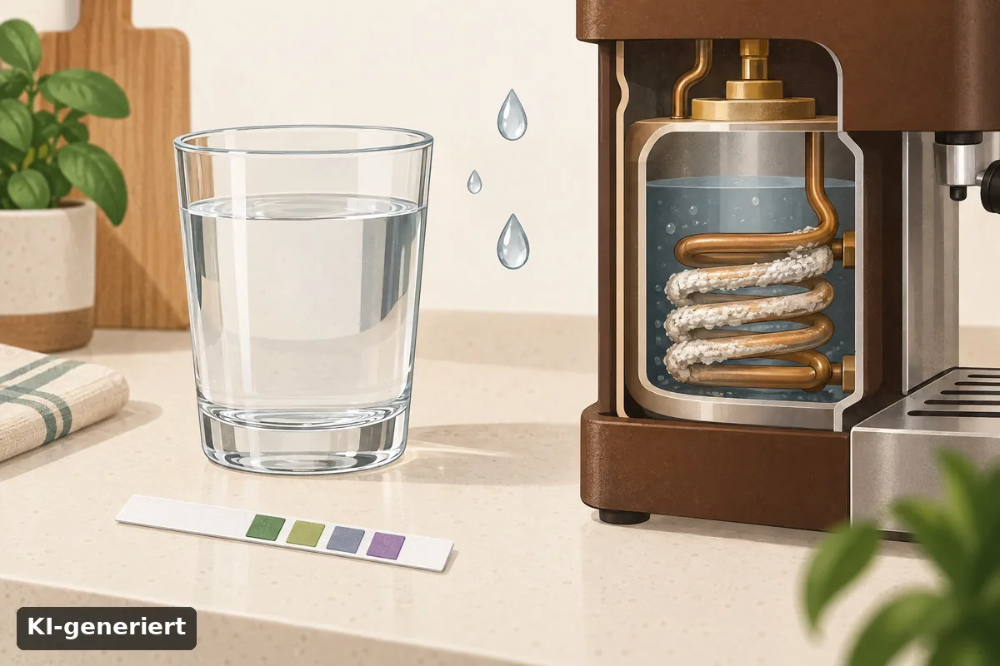

Sage lässt dich selbst entkalken, Lelit schickt dafür einen Techniker, und bei Profitec kommt es auf die Version der GO an. Alle Angaben stammen aus den Anleitungen der Hersteller, Stand .
Wähle deine Maschine und trag ein, was du über dein Wasser weißt. Der Rechner zeigt, was der Hersteller dazu schreibt. Leere Felder lässt er weg.
Die Unterschiede sind groß. Bei Sage startest du ein Programm an der Maschine. Bei Profitec und Lelit sollst du Kalk vor allem mit dem richtigen Wasser vermeiden.
| Maschine | Wasser laut Hersteller | Entkalken | Wer entkalkt |
|---|---|---|---|
| Sage Bambino Plus | kaltes Leitungswasser, Filter nach 3 Monaten wechseln | alle 90 Tage bei Stufe 4, alle 60 Tage bei Stufe 6, die Maschine zeigt es an | du, mit dem Entkalkungsprogramm |
| Sage Barista Express | Filter nach 3 Monaten oder 40 Litern, bei Stufe 2 nach 60 Litern | alle 90 Tage bei Stufe 4, alle 60 Tage bei Stufe 6, ohne Erinnerung | du, mit dem Entkalkungsprogramm |
| Profitec GO (erste Version) | höchstens 4 °dH, sonst Enthärter oder Filterpatrone | kein festes Intervall | vorbeugend nach Rücksprache mit dem Fachhändler, verkalkt nur der Fachhändler |
| Profitec GO 2.0 | 2 bis 6 °dH Karbonathärte, sonst der mitgelieferte Filter | nur vorbeugend, über das Menü „Descaling Process“ | du, verkalkt der Fachhändler |
| Lelit Bianca V3 | kein Grenzwert genannt, Harzfilter liegt bei | einmal im Jahr | ein Techniker, nach Prüfung durch den Händler |
Quellen: die Anleitungen der Hersteller, siehe unten. Die GO 2.0 erkennst du an zwei Bezugstasten mit Leuchtring und einem Display mit Menü. Die erste Version hat Taster für Kaffee und Dampf und ein PID-Display mit Plus- und Minustaste.
Am einfachsten fragst du deinen Wasserversorger. Er muss den Härtebereich mindestens einmal im Jahr mitteilen, so verlangt es § 9 des Wasch- und Reinigungsmittelgesetzes. Oft steht der Wert auch auf seiner Website, manchmal in °dH.
| Härtebereich | Calciumcarbonat | Umgerechnet |
|---|---|---|
| weich | unter 1,5 mmol/l | unter ca. 8,4 °dH |
| mittel | 1,5 bis 2,5 mmol/l | ca. 8,4 bis 14 °dH |
| hart | über 2,5 mmol/l | über ca. 14 °dH |
Bereiche nach § 9 WRMG. Die Umrechnung in °dH ist gerundet.
Sage verkauft Teststreifen für seine Maschinen. Bei den Streifen für Oracle und Dual Boiler ist die Stufe die Zahl der roten Felder. Die Anleitungen der Bambino Plus und der Barista Express nennen die Stufen 4 und 6, erklären die Skala aber nicht.
Profitec misst bei der GO 2.0 die Karbonathärte, nicht die Gesamthärte. Die passenden Teststäbchen liegen der Maschine bei. Die Gesamthärte vom Versorger kannst du dafür nicht direkt einsetzen.

Eine schon verkalkte Profitec GO entkalkt laut Profitec nur der Fachhändler. Gelöste Kalkreste können sonst das System blockieren, deshalb müssen Kessel und Schläuche teils zerlegt werden. Profitec warnt außerdem: Zu spätes Entkalken kann die Maschine erheblich beschädigen.
Lelit lässt die Bianca V3 jedes Jahr entkalken, aber nie vom Besitzer. Erst prüft der Händler den Zustand, dann entkalkt ein Techniker. So sollen Schäden an inneren Teilen vermieden werden.
Bei Sage gibt es keinen solchen Hinweis. Bambino Plus und Barista Express haben ein Entkalkungsprogramm für dich.
Keine der fünf Anleitungen erwähnt Essig. Sage nennt für die Barista Express das eigene Entkalkungspulver. Profitec erlaubt für die GO 2.0 nur den originalen Profitec-Entkalker. Nimm also das Mittel, das der Hersteller nennt.
Reinigungsmittel für die Brühgruppe findest du bei unserem Zubehör. Welche Schritte für deine Maschine gelten, steht auf den Pflege-Seiten:
Das hängt von Maschine und Wasser ab. Sage nennt für Bambino Plus und Barista Express alle 90 Tage bei Wasserhärte-Stufe 4 und alle 60 Tage bei Stufe 6. Lelit lässt die Bianca V3 einmal im Jahr von einem Techniker entkalken. Profitec nennt für die GO kein festes Intervall.
Keine der fünf Anleitungen, die wir ausgewertet haben, erwähnt Essig. Sage nennt für die Barista Express das eigene Entkalkungspulver. Profitec erlaubt für die GO 2.0 nur den originalen Profitec-Entkalker, um Materialschäden und Funktionsstörungen zu vermeiden. Nimm das Mittel, das der Hersteller nennt.
Dein Wasserversorger muss dir den Härtebereich mindestens einmal im Jahr mitteilen, so steht es in § 9 des Wasch- und Reinigungsmittelgesetzes. Oft steht er auch auf der Website des Versorgers. Für Sage-Maschinen gibt es Teststreifen: Die Zahl der roten Felder ist die Stufe.
Die Anleitungen der Bambino Plus und der Barista Express nennen Stufe 4 und Stufe 6, erklären die Skala aber nicht. Bei den Sage-Teststreifen für Oracle und Dual Boiler ist die Stufe die Zahl der roten Felder. Eine Umrechnung in °dH nennt Sage nicht.
Profitec schreibt für die GO, dass gelöste Kalkreste das System blockieren können. Dann müssen Kessel und Schläuche teils zerlegt werden, und das macht der Fachhändler. Lelit lässt die Bianca V3 grundsätzlich von einem Techniker entkalken, um Schäden an inneren Teilen zu vermeiden.
Ja, alle drei Hersteller empfehlen einen Filter. Er ersetzt das Entkalken aber nicht ganz: Profitec schreibt für die GO 2.0, dass der Filter nicht vollständig vor Verkalkung schützt. Laut Sage muss die Barista Express seltener entkalkt werden, wenn du den Filter regelmäßig wechselst.
Mehr zu den Maschinen findest du in den Erfahrungsberichten zur Sage Bambino Plus, Sage Barista Express, Profitec GO und Lelit Bianca V3.